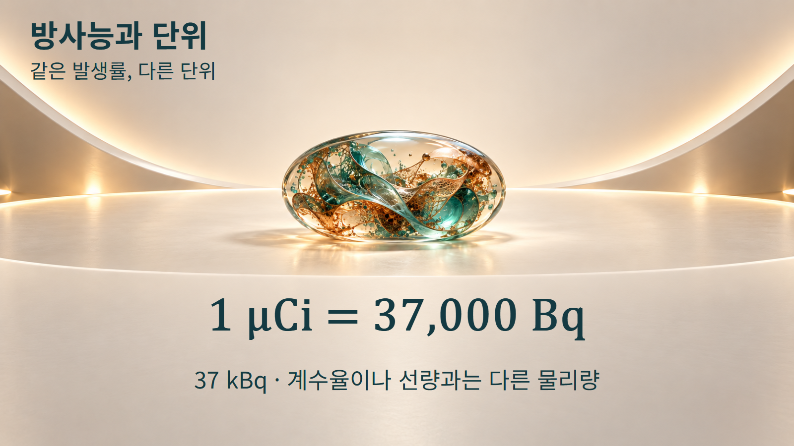
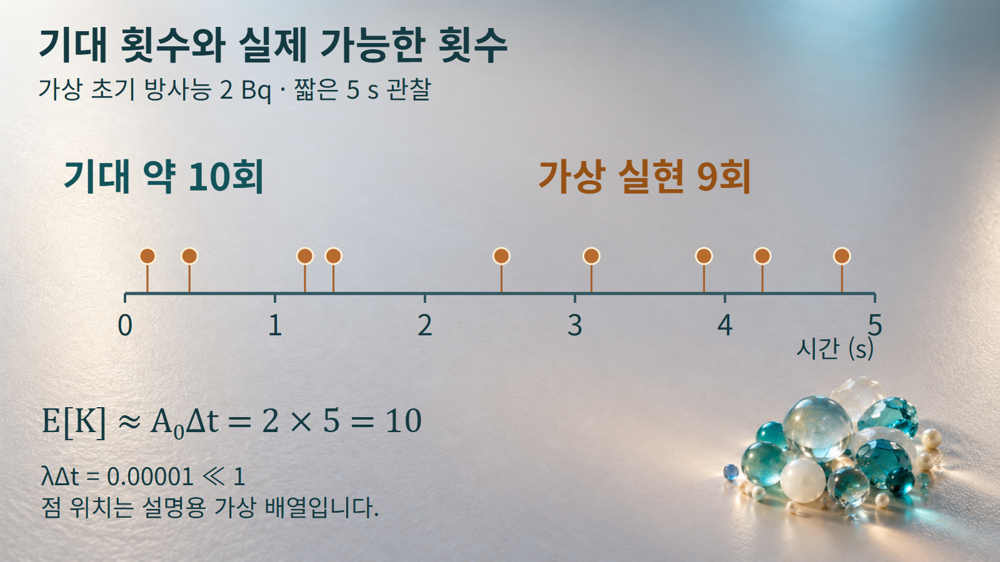
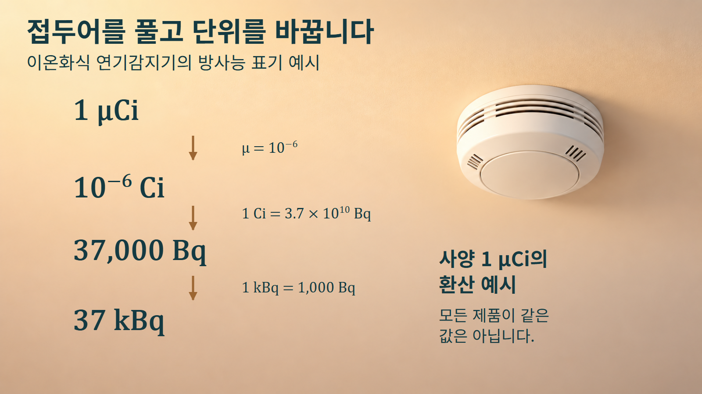

방사성붕괴와 시간 · 052
방사능과 단위
붕괴 발생률을 읽고 Bq와 Ci를 환산하는 방법
1 μCi와 37,000 Bq는 숫자의 크기가 크게 다르지만 같은 방사능을 나타냅니다. 서로 다른 단위의 숫자를 비교하기 전에 같은 발생률로 환산해야 합니다.

방사능은 핵변환의 발생률입니다
방사능 A는 방사성 핵종의 집단에서 단위시간당 핵변환이 일어나는 평균 발생률입니다. 베크렐(Bq)은 이 물리량의 SI 단위이며 1 Bq=1 s−1입니다. 예를 들어 2 Bq는 해당 시점에서 초당 평균 두 번의 핵변환에 해당하는 발생률을 뜻합니다. 초마다 정확히 두 번씩 일정한 간격으로 사건이 발생한다는 약속은 아닙니다.
여기서 세는 대상은 핵변환입니다. 한 핵변환에서 여러 방사선이 나오거나, 어떤 방사선은 검출기까지 도달하지 못할 수 있습니다. 따라서 방출 광자 수, 검출기가 기록한 계수, 흡수된 에너지를 모두 같은 숫자로 놓을 수는 없습니다. 물리량을 먼저 구분해야 단위를 바르게 읽을 수 있습니다.
방사능은 A=λN으로 나타내며 Bq·Ci로 표기합니다. [1] 이 글에서 N은 같은 핵종과 상태의 남아 있는 핵수이고, λ는 일정한 붕괴상수입니다. 이전 글의 지수감소식 전체를 다시 유도하기보다, 이 발생률이 시간 구간과 단위 표기에서 어떤 의미를 갖는지 살펴봅니다.
순간 발생률과 구간의 횟수를 구분합니다
A=λN에서 λ의 단위가 s−1이면 A는 Bq로 나타납니다. N이 줄어들면 A도 변하므로 처음의 발생률에 긴 관찰시간을 무조건 곱할 수는 없습니다. 공급과 제거가 없는 단일 핵종에서 처음 핵수가 N0일 때, 길이 Δt인 구간의 기대 붕괴수는 E[K]=N0(1−e−λΔt)입니다. K는 구간에서 일어나는 사건 수이며, E[K]는 여러 가능한 실현을 평균한 기댓값입니다.
λΔt가 1보다 매우 작으면 구간에서 발생률이 거의 달라지지 않아 E[K]≈A0Δt로 근사할 수 있습니다. 가상 예시로 N0=106, λ=2×10−6 s−1, Δt=5 s를 사용하겠습니다. 처음 방사능은 2 Bq, λΔt=0.00001이며 정확한 기대값은 약9.99995회입니다.
이 조건에서 5초 동안의 기대 붕괴수는 약 10회이지만, 각 구간에서 반드시 10회가 일어나는 것은 아닙니다.

그림의 점9개는 이러한 구분을 설명하기 위해 정한 가능한 가상 배열입니다. 실측자료도, 난수 실험의 결과도 아닙니다. 점 사이 간격이 일정하지 않은 것은 무작위 사건의 개념을 표현하며, 표시한 위치 자체로 실제 시료의 시간 패턴을 예측하지 않습니다. 충분히 긴 구간에서는 변화하는 A(t)를 적분하거나 처음과 끝의 기대 핵수 차이를 계산해야 합니다.
두 단위 환산을 직접 계산합니다
퀴리(Ci)는 방사능을 나타내는 다른 단위이며 1 Ci=3.7×1010 Bq로 정의됩니다. [2] 접두어 μ는10−6, k는103을 뜻합니다.
예시 1은1 μCi를 Bq로 바꾸는 계산입니다. 1 μCi=10−6 Ci이므로 여기에3.7×1010 Bq/Ci를 곱하면3.7×104 Bq, 곧37,000 Bq입니다. 다시1,000으로 나누어37 kBq라고 쓸 수 있습니다. 물리적 방사능이 바뀐 것이 아니라 같은 값을 나타내는 단위가 바뀐 것입니다.
예시 2는740 kBq를 μCi로 환산하는 역방향 계산입니다. 먼저740×1,000=740,000 Bq로 풀고,1 μCi당37,000 Bq로 나누면20 μCi입니다. 단위끼리 약분하여 Bq가 사라지고 μCi가 남는지 함께 확인하면 곱셈과 나눗셈의 방향을 점검할 수 있습니다.
mCi의 m은 밀리로10−3이고, μCi의 μ는 마이크로로10−6입니다. 따라서1 mCi=1,000 μCi이며, 두 기호를 바꾸어 읽으면1,000배 차이가 생깁니다. MBq의 대문자 M은106을 뜻하므로 소문자 m과도 구별해야 합니다.
연기감지기의 방사능 사양을 읽습니다
2025년 1월 기준으로 판매되는 대부분의 해당 장치에 들어 있는 Am-241의 방사능은 1 μCi 이하로 보고되었습니다. [3] 당시 사양의 맥락을 이용해 단위 표기를 읽되, 모든 제품이 정확히1 μCi이거나 현재 시장의 모든 장치가 이 사양이라고 일반화하지 않습니다.
예를 들어 사양에 1 μCi라고 쓰여 있다면, 같은 방사능을 37 kBq로 표시할 수 있습니다.

이온화식 연기감지기에서는 Am-241이 방출하는 알파입자가 공기를 이온화하고, 전극 사이에 작은 전류가 흐릅니다. 연기가 들어오면 그 전류에 변화가 생겨 감지에 이용됩니다. [4] 사양의1 μCi는 장치에 들어 있는 방사성물질의 방사능 표기이며, 화면에서 매초37,000개의 신호를 세어 보여 준다는 뜻이 아닙니다.
같은 환산식은 사양서를 비교하거나 단위 체계를 통일할 때 유용합니다. 다만 자료의 기준 시각, 핵종, 장치 종류와 제품별 사양을 함께 보아야 합니다. 방사능 값 하나만으로 감지 성능이나 사람에게 전달되는 선량을 계산할 수는 없습니다.
방사능·계수율·선량은 다른 질문에 답합니다
계수율은 검출기가 단위시간에 기록한 신호 수입니다. 같은 방사능이라도 방사선의 방출 확률, 검출 효율, 선원과 검출기의 배치, 차폐와 배경 등에 따라 기록되는 계수율은 달라질 수 있습니다. [5] 따라서 계수율의 숫자를 보정이나 측정 맥락 없이 그대로 Bq라고 붙이지 않습니다.
흡수선량의 단위인 그레이(Gy)는 단위질량당 흡수된 에너지이며1 Gy=1 J/kg입니다. 시버트(Sv)는 방사선방호의 선량당량 등에 쓰는 단위입니다. 방사능, 흡수선량과 선량당량은 서로 다른 물리량입니다. [6]
Bq는 핵변환의 발생률이고 Gy·Sv는 선량과 관련된 양이므로, 모든 상황에 통하는 하나의 환산계수로 서로 바꿀 수 없습니다. 또한 Gy와 Sv의 차원이 같다는 이유로 언제나 수치가 같다고 보지도 않습니다. 핵종, 방사선의 성질, 시간과 노출 조건 등을 빼고 방사능 숫자만으로 건강 위험을 판정하는 것은 이 단위 설명이 제공하는 정보의 범위를 벗어납니다.
발생률을 같은 단위로 맞추어 비교합니다
아래 표는 방사능 단위 사이의 관계입니다. 모든 행은 같은 종류의 물리량을 다루며 계수율이나 선량으로 바꾸는 표가 아닙니다.
| 표기 | Bq로 표시한 값 | 접두어 확인 |
|---|---|---|
| 1 Bq | 1 Bq | 초당 핵변환 발생률 |
| 1 kBq | 1,000 Bq | k=103 |
| 1 MBq | 1,000,000 Bq | M=106 |
| 1 Ci | 37,000,000,000 Bq | Ci의 정의값 |
| 1 mCi | 37,000,000 Bq | m=10−3 |
| 1 μCi | 37,000 Bq | μ=10−6 |
먼저 무엇의 발생률인지 확인하고, 접두어를 풀어 단위를 통일한 뒤 수치를 비교합니다. 관찰시간을 곱할 때에는 발생률이 거의 일정한 짧은 구간인지 확인하며, 얻은 기대 횟수를 매번 보장되는 횟수로 해석하지 않습니다. 이 순서를 지키면37,000 Bq라는 큰 숫자와1 μCi라는 작은 숫자를 같은 기준에서 읽을 수 있습니다.